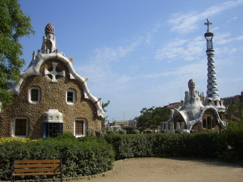
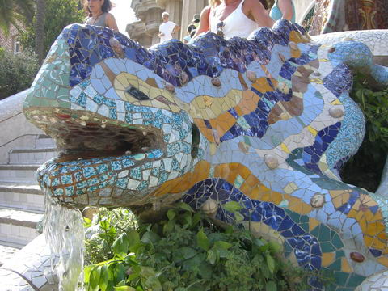
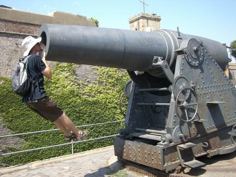
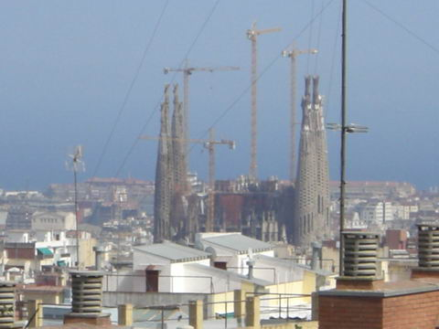
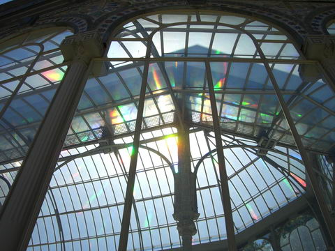
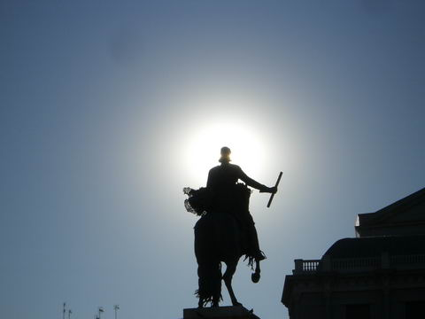
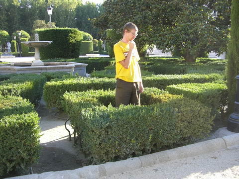
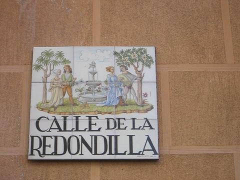
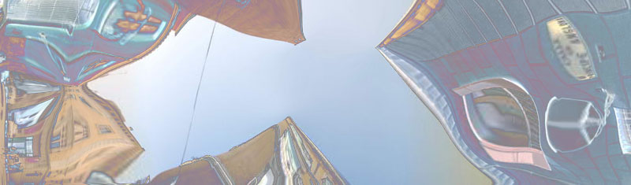
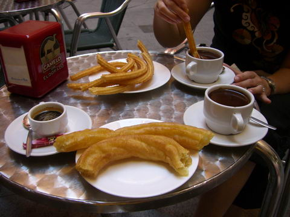

spain
barcelona

gaudi is one of barcelona's famous architects and has a very unique style

lots of surreal wavy building and mosaics

there's a big fortress up on the coast with some old cannons

familia is a gaudi work in progress. started more than a hundred years ago it's due for completion in 2025, just before (warning: incoming nerd joke) the release of duke nukem forever
madrid

in madrid's central park is this amazing huge glass conservatory.

it was very hot and bright in spain and lining up this statue made for a great pic as well as a sore eye for the next few weeks

the spanish are famous for their extremely difficult hedge mazes

and noone does street signs like madrid

here's my attempt at something slightly surreal

for our leaving breakfast; deep fried stick things, a mug of thick dipping chocolate and an espresso. yum! instant heart attack!